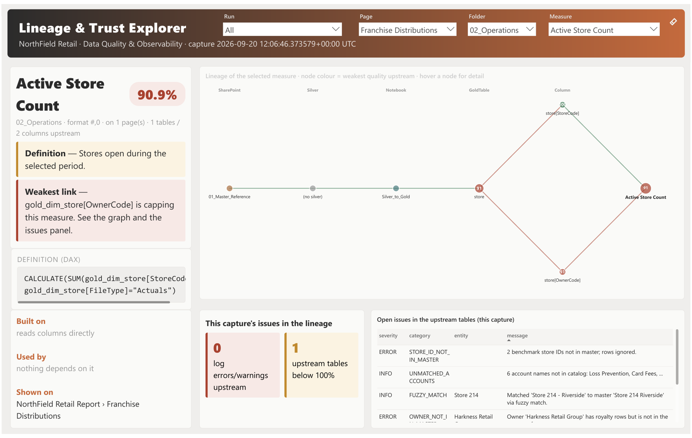
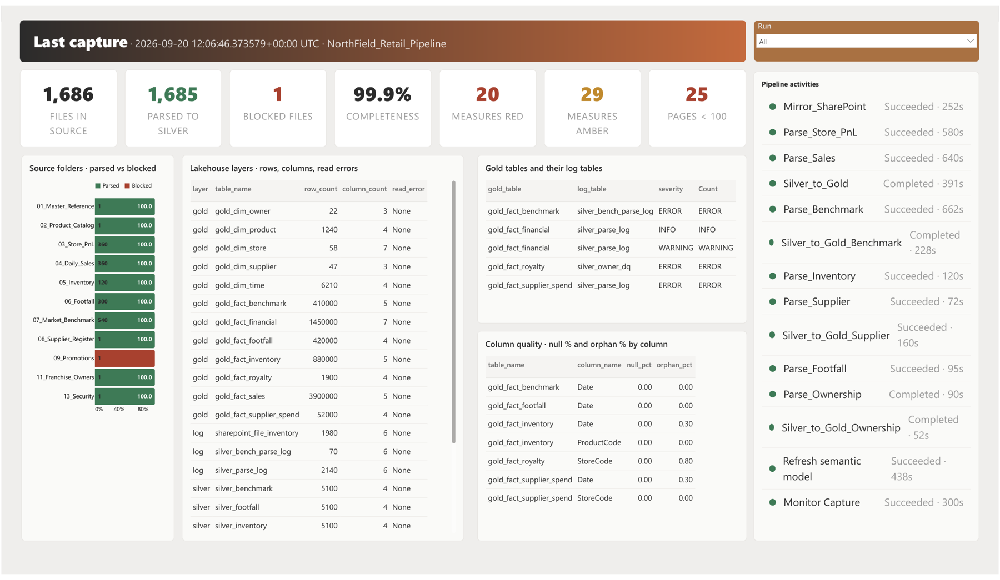
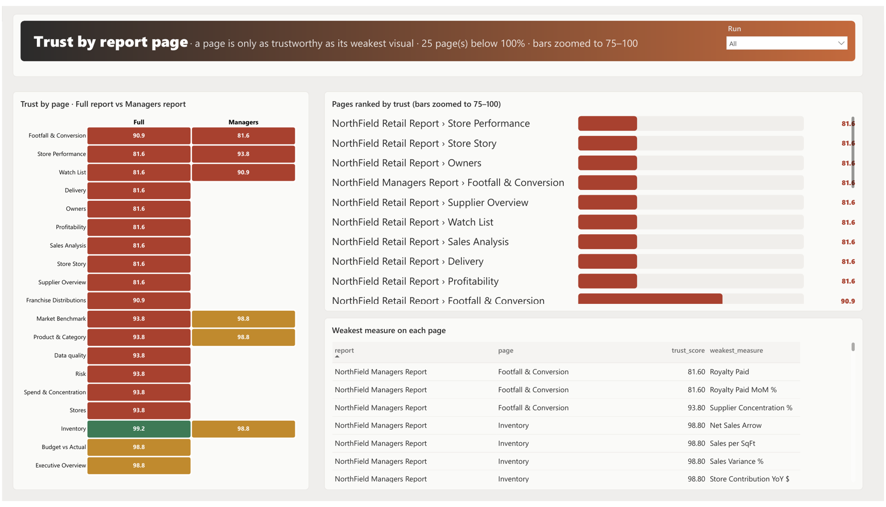
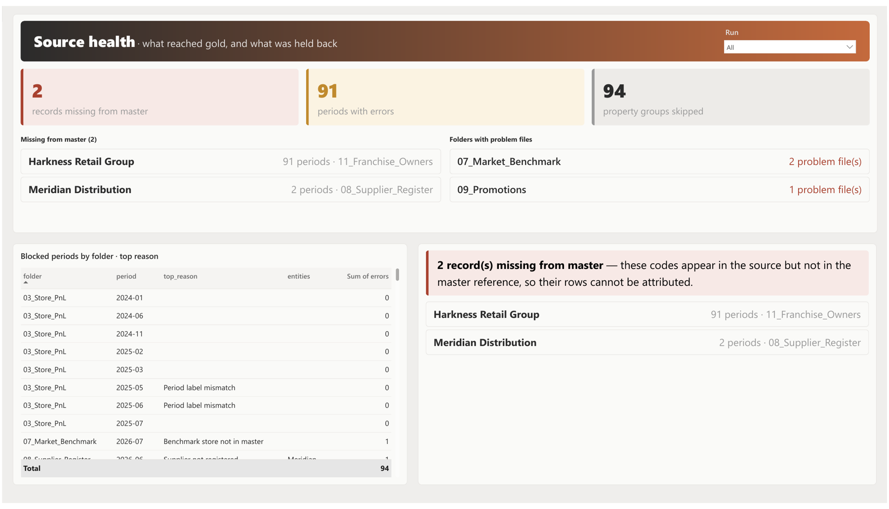

Measured, not asserted: a trust layer for every number in a Power BI report
Every dashboard answers "what is the number?" Almost none can answer "can I trust it?" Here is how I built one that can — one capture per pipeline run, a score on every measure and page, and a graph that shows where each number came from — with the live report embedded below, so you can click through it yourself.
The question a dashboard cannot answer
A number on a report page is the last link of a long chain. A file lands in SharePoint. A notebook parses it. A lakehouse table is built. A key column joins it to a master. A DAX measure sums it. A visual shows it. The report sees only that last link.
And the chain breaks quietly. A store code that is missing from the owner master does not throw an error. The royalty total is simply smaller than it should be — and it is still green.
"The pipeline ran" is not the same as "the numbers on page 3 are complete." That gap is what this project closes: a trust layer that measures every number instead of asserting it.
The demo — have a go yourself
The live report. Use the page tabs along the bottom to move between Explore, Last Capture, Page Trust and Source health. Synthetic retail data — no client data appears.
Start on Explore: pick a report page, then a measure on it. The trust score, the definition, the DAX and the lineage graph appear together. Follow one red key upstream to its cause, then look at the two pages it touches and the fix list on Source health. The rest of this article is that same walk in writing — first how it was made, then page by page.
How it was made
1. The platform: files in, reports out
The platform is a medallion lakehouse on Microsoft Fabric. Business users drop reference files and monthly exports into SharePoint, one folder per source. Bronze mirrors every file exactly as it arrived. Silver is where parser notebooks read each template and write typed rows plus a parse log per file. Gold holds the facts and dimensions with keys resolved against the masters. A semantic model sits on the lakehouse, the measures are DAX, and the reports sit on top.
A Fabric data pipeline runs the whole chain on a schedule and refreshes the model. The Monitor capture is the pipeline's last step, so every run leaves a record of what it did and how clean it was.
2. The signals already existed — in six places
| Where | What it already records |
|---|---|
| File sync log | Every file that landed: name, size, timestamp, sync status |
| Parser logs | Severity, category, period, file and message for each parse |
| Per-file status | OK, ERROR, IGNORED, COVERED — wrong template, empty, unexpected type |
| Master-data DQ tables | Codes in the data that no master knows: stores, owners, suppliers |
| Tie-out checks | Subtotals that must foot; a group is skipped when they disagree |
| Orphan gates | A key that cannot be matched stops the gold build |
Six tables, six shapes, six notebooks. Nobody read them together, and none of them knew which report page a broken key ended up on. The missing piece was not more checks. It was a join between the logs, the semantic model and the report definitions, rolled up to a page.
3. One capture per run: 28 tables in a Monitor lakehouse
The pipeline got one more step at the end: a notebook that writes a capture into a Monitor lakehouse. Twenty-eight mon_* tables, in six groups:
| Group | Tables |
|---|---|
| Run | mon_run · mon_run_activity · mon_pipeline_definition |
| Source files | mon_source_file · mon_file_status · mon_source_issue · mon_period_status · mon_missing_master · mon_source_completeness · mon_folder_summary |
| Lakehouse | mon_table_snapshot · mon_table_lineage · mon_column_quality · mon_schema_drift · mon_log_event |
| Semantic model | mon_model_measure · mon_model_dependency · mon_model_relationship · mon_model_role · mon_model_partition |
| Reports | mon_report_page · mon_report_visual · mon_visual_field |
| Trust and lineage | mon_trust_measure · mon_trust_visual · mon_trust_page · mon_lineage_node · mon_lineage_edge |
Every row carries a run_id and captured_at, so captures can be compared over time. It is Delta on the lakehouse with a Direct Lake model on top. Nothing is copied.
4. How the notebook reads it
Nothing is typed by hand. The inputs are the model's own metadata, the report's own definition and the logs the pipeline already writes.
- Semantic Link (
sempy.fabric) lists the model's tables, measures (with DAX, description, display folder and format), relationships, partitions and roles. - Semantic Link Labs gives the measure dependency tree — DAX down to the columns and tables it reads — and the report definition (PBIR), so the capture knows which page shows which measure.
- Spark on the lakehouse computes row counts, null % and orphan % on every key column, checks that each key resolves to its dimension, and compares the lakehouse schema with the model.
- Pipeline and parser logs supply what happened this run: activities and durations, files seen, parsed and blocked, issues by folder and period, codes missing from a master.
5. The trust rule: minimum, not average
Column quality is 100 minus null % minus orphan %. A table is capped by its worst key column, because a broken join breaks every row. A measure's trust is the minimum across every column its DAX reaches, plus each upstream table's worst key. A visual takes the minimum of its measures. A page takes its weakest visual.
An average would hide one broken key behind nine clean columns. The minimum does not — and the lineage graph shows which key, on which page. The thresholds live in the data contract, not in the code.
Exploring the report
The Trust Explorer is a four-page Power BI report on a Direct Lake model over the Monitor lakehouse: 28 tables joined on the run, 45 measures, one 1920×1080 canvas per page. The lineage graph, the page heatmap and the source funnel are Deneb (Vega-Lite) visuals; the measure card, DAX, links, issues and KPI strips are HTML Content visuals rendered from DAX measures. The model was built with Tabular Editor scripts and the report definition (PBIR) is pushed with the Fabric REST API from a notebook, so the whole thing is re-runnable in any workspace.
Page 1 · Explore — "Can I trust this measure?"

Four slicers across the top: Run → Page → Folder → Measure. Pick a report page and the measure list shrinks to what is on it — one relationship between the visual fields and the measure catalogue does that. Here the page is Franchise Distributions and the measure is Active Store Count.
- The card (top left): trust 90.9 %, red, the folder, the format, how many pages show it, and the plain-English definition pulled from the model's description. Underneath, the weakest link is named: gold_dim_store[OwnerCode] is capping this measure.
- The DAX below it, straight from the model — no copy kept anywhere else.
- The lineage graph (centre): SharePoint folder
01_Master_Reference→ theSilver_to_Goldnotebook → thestoregold table at 91 → the two columns the DAX reads:store[StoreCode]green at 100 andstore[OwnerCode]red at 91 → the measure at 91. The store count itself is fine; the owner key is not. Node colour is the weakest quality reaching that node; hover any node for its layer and score. - Built on / Used by / Shown on (bottom left): what this measure reads, what depends on it, and the page it appears on.
- This capture's issues (bottom centre): 1 upstream table below 100 %. The table beside it lists what is open this run: a benchmark store ID not in master, a fuzzy store-name match, and the owner Harkness Retail Group with royalty rows but no entry in the owner master.
Page 2 · Last Capture — "Did the run do what it should?"

The KPI strip reads left to right: 1,686 files in source, 1,685 parsed to silver, 1 blocked, 99.9 % completeness, 20 measures red, 29 amber, 25 pages below 100. One blocked file and 99.9 % completeness sounds fine — until you see that 20 measures and 25 pages are red because of it. Completeness of files and trust of numbers are different questions.
- Source folders · parsed vs blocked: every folder green except
09_Promotions, whose only file was blocked (wrong template). - Lakehouse layers: row and column counts for every gold, silver and log table in the capture, with read errors —
gold_fact_salesat 3.9 million rows,gold_fact_financialat 1.45 million. - Gold tables and their log tables: which parse or DQ log feeds each gold table and the worst severity it carries this run.
- Column quality: null % and orphan % per key column.
gold_fact_royalty[StoreCode]shows 0.80 % orphans — that is the broken key the rest of the report keeps pointing at. - Pipeline activities (right): every activity of the run with status and duration, ending with Refresh semantic model and Monitor Capture — the capture is the last step.
Page 3 · Page Trust — "Which pages can I present?"

A page is only as trustworthy as its weakest visual.
- The heatmap (left): the Full report and the Managers report side by side. Inventory is the one green page at 99.2 — it only draws on measures whose upstream is clean. Budget vs Actual and Executive Overview are amber at 98.8. Everything that touches royalties or suppliers is red at 81.6 to 93.8.
- Pages ranked by trust (top right): the bars are zoomed to 75–100 so the difference between 81.6 and 98.8 is visible. Nine pages sit at exactly 81.6 — the same key, the same cap.
- Weakest measure on each page (bottom right): the table names the culprit. On the Managers report's Footfall & Conversion page it is Royalty Paid at 81.60, then Royalty Paid MoM %; on Inventory the weakest is Net Sales Arrow at 98.80.
Same run, same model, same pipeline. The difference between a green page and a red one is one key.
Page 4 · Source health — "What went wrong at the source?"

- Missing from master (2): Harkness Retail Group has royalty rows in
11_Franchise_Ownersacross 91 periods but is not in the owner master. Meridian Distribution appears in08_Supplier_Registerfor 2 periods and is not a registered supplier. Those two codes are the whole story behind Royalty Paid at 81.6 and every red page that shows it. - 91 periods with errors, 94 property groups skipped: the size of the gap in one number each.
- Folders with problem files:
07_Market_Benchmark(2 files) and09_Promotions(1 file) — the per-file reconciliation that catches a wrong template or an empty file before the parser ever sees it. - Blocked periods by folder · top reason: period by period, with the reason — Period label mismatch, Benchmark store not in master, Supplier not registered.
The fix is a master-data entry, not a code change. That is the point of putting the cause next to the effect.
Where the data contract sits
Governance stays with people
None of this replaces a data contract, or the people who own it. The contract is the governance decision: which files must arrive, from which folder, in which template; which columns are keys and which master they resolve to; what "complete" means; who fixes what when a code is missing. The Monitor is the instrument that checks that contract on every run and makes the drift visible on every page. Thresholds live in the contract, not in the code.
What's next
- Trend across captures — the
run_idis already on every row. - An alert when a page turns red, sent to the page's owner.
- Model health (VertiPaq size, best-practice rules) in the same capture.
Measured, not asserted.
A capture at the end of every pipeline run. A score on every measure and every page. A graph that shows where the number came from.
If you are building something similar, or you disagree with the minimum-not-average rule, I would like to hear it — send me a message or find me on LinkedIn.
Built with Microsoft Fabric, Semantic Link, Semantic Link Labs, Delta, Direct Lake, Power BI and Deneb. All data shown is synthetic (NorthField Retail); no client data appears in this article or the embedded report.